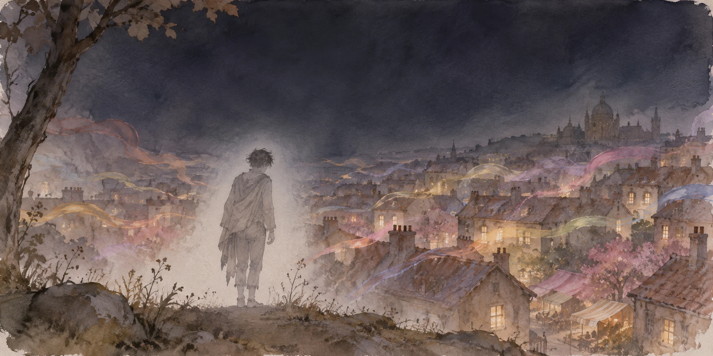
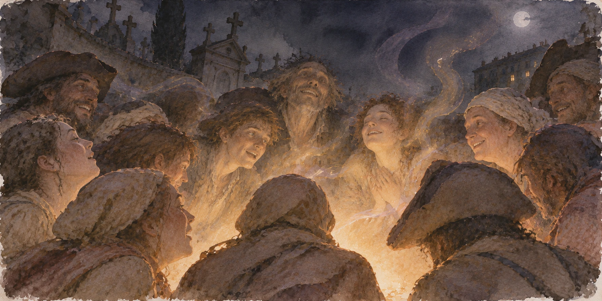
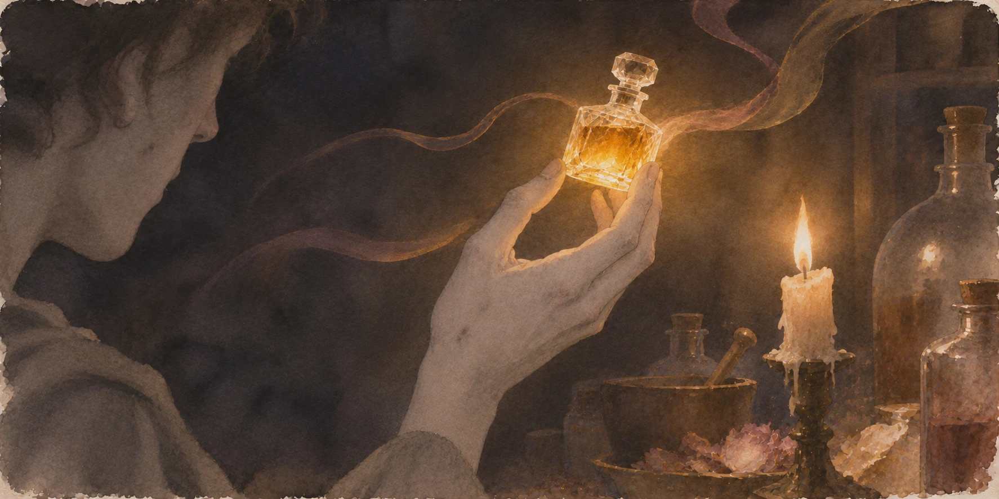
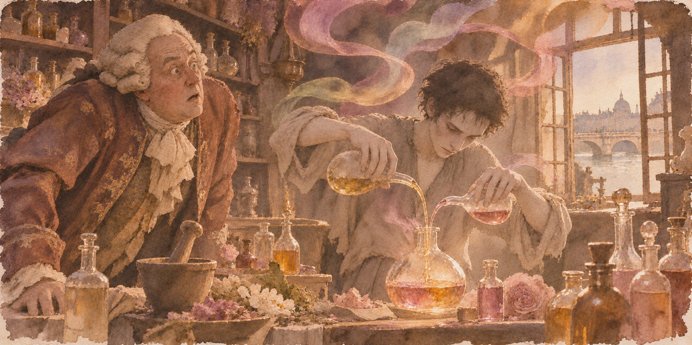
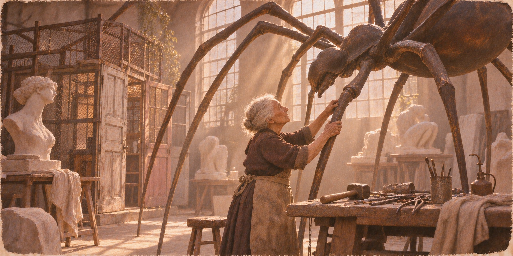
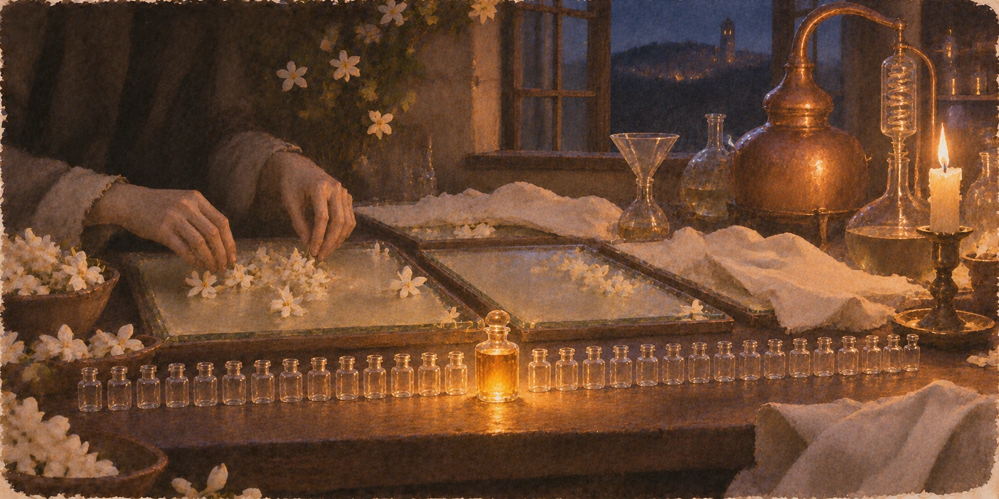
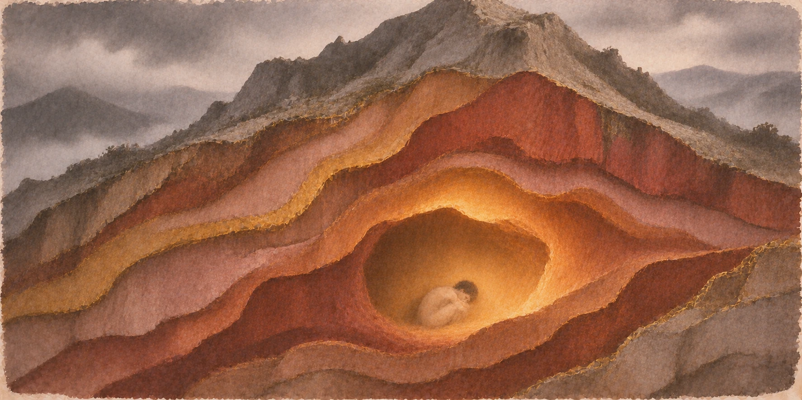

1738
Рыбный ряд у кладбища Невинных
Против любви, но за жизнь

доклад по роману Патрика Зюскинда «Парфюмер»
Жан-Батист Гренуй и мир частичных объектов
листайте вниз ↓

1738
Против любви, но за жизнь

1767
За любовь, но против жизни

Можно ли назвать творчеством то, что от первого до последнего шага идёт к смерти?

I. Чем живо живое
Повторение становится творчеством, когда его кто-то принимает
Фрейд, 1914: перенос — «промежуточное царство между болезнью и жизнью»
старая пьеса, которую играем, не помня текста
и не играет по старым нотам
терапия там, где встречаются две игры (Винникотт)
призраки становятся предками (Лёвальд)

«Искусство — гарантия душевного здоровья»
— Луиза Буржуа*. Живое произведение — это обращение.
* Луиза Буржуа (1911–2010) — французско-американская художница и скульптор, автор гигантских пауков «Маман» и «Клеток». Её отец годами жил в доме с любовницей — гувернанткой детей; эту детскую рану Буржуа всю жизнь переплавляла в искусство. На иллюстрации — образ, а не портрет.

II. Ребёнок, который не пахнет
«Когда я смотрю, меня видят, значит, я существую»
Винникотт, 1967
Гренуй не пахнет. Первое узнавание не состоялось.

деньги
рабочие руки
рецепты
доказательство теории

Гренуя никто не видел целым — и он не видит целым никого.
II. Мир частичных объектов
Грудь вместо матери, запах вместо девушки
у Мелани Кляйн
Сначала знает не мать, а грудь. Целого человека, которого можно любить и потерять, открывает позже.
в романе
Так и остаётся у груди. Ему нужна не девушка, а её запах.

Другой становится настоящим, когда выживает
Винникотт, «Использование объекта», 1969
в фантазии, в ярости, в нападении
не погибает и не мстит
внешним, отдельным, другим
В мире Гренуя не выживает никто.

III. Язык, которого нет
— слова, которые Гренуй понимает с трудом: у них нет запаха

Не «во мне ничего нет», а «меня никто не воспринял — и я не могу воспринять себя»
Бион: непринятое возвращается «безымянным ужасом»

Двадцать пять девушек.
Двадцать пять убийств.
Один флакон.

А наутро — стыд, молчание и забвение
двадцать пять жизней — один запах
Шассге-Смиргель, 1984


VI. Так творчество ли это?
Та же сила, что движет любым художником, — но обращённая против субъекта
оставляет другому свободу ответить и меняет обоих
отменяет и другого, и самого автора

Эпилог
Перенос не отсутствует — его трудно распознать.
Розенфельд, 1952
Катастрофа уже случилась — но рядом не было никого, кто помог бы её пережить.
Винникотт, «Страх распада», 1974

Гренуй ни к кому не пришёл. Пациент — пришёл, и это уже обращение.
Наша работа — учуять того, кто сам себя не чует.
Конягина Анастасия · декабрь 2026
Подчёркнутые слова° открывают заметки из рабочей базы автора. Иллюстрации созданы нейросетью.